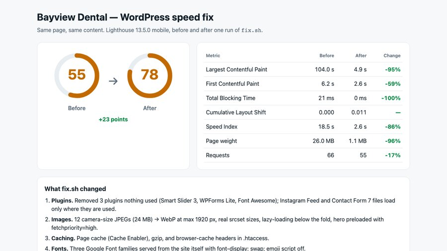
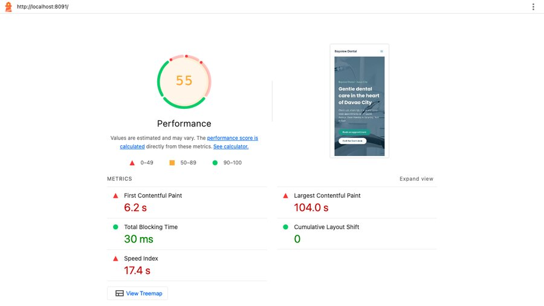
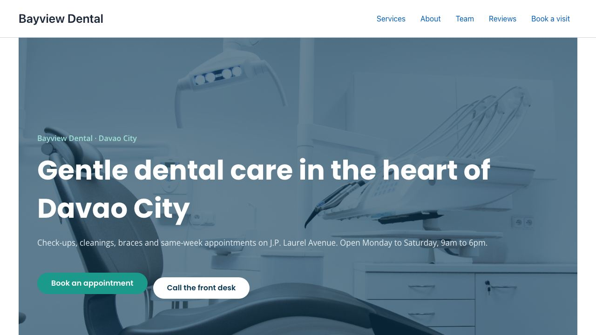

Slow WordPress site fixed: patients on a phone see the page in 4.9 seconds, not 104
On a slow mobile connection, people opening this clinic's website waited 104 seconds before the main picture appeared. After my fix they wait 4.9 seconds. The page is 96% lighter, nothing on it looks different, and the whole fix is one script using free tools.
What changes for the clinic
- Before: a patient taps the clinic's link on mobile data and stares at a blank screen. In the filmed test the page took 142.7 seconds to finish loading. Many people give up long before that.
- After: same phone, same slow connection: the page is done in about 10 seconds, and the "Book an appointment" button is there to tap.
- Also: Google counts page speed when ranking sites, and its Lighthouse score for this page went from 55 to 78.
- For you as the owner: no redesign, no new paid tools, nothing to learn. The site you know, just faster. The fix script ran in under 3 minutes and can be run again.
What I'd do on your site
- Backup first: a full copy of your files and database, kept off the server, before anything changes.
- Staging copy: I work on a copy of your site (your host's staging or a private copy), not the live one.
- Measure: Lighthouse on your key pages, median of 3 runs, plus Google's real-visitor data where your site has it.
- Fix, one step at a time: photos, unused plugins, caching, fonts, scripts, database, checking the pages after each step.
- Re-measure with the same method, so the before and after are fair.
- Report: a one-page before/after like the one above, what I changed and why. Changes go live only when you approve.
What you get: the backup, the before/after report, a list of every change, and if you want ongoing care, a monthly routine to keep it fast: plugin and theme updates on staging first, removing plugins you no longer use, a database cleanup and a fresh speed check.
I haven't done this on a paying client's site yet; this demo is how I'd work on yours.
Nothing visibly changed
The fix is checked, not eyeballed: every heading from the old page must still be on the new page (17 of 17, at desktop and phone width), and full-page screenshots before and after differ by less than 0.1% of pixels, which is the photos being re-compressed.
Results
| Measure | Before | After |
|---|---|---|
| Google Lighthouse score (mobile, out of 100) | 55 | 78 |
| Main picture appears (Largest Contentful Paint) | 104.0 s | 4.9 s |
| Anything appears (First Contentful Paint) | 6.2 s | 2.6 s |
| Page visibly filled in (Speed Index) | 18.5 s | 2.6 s |
| Page frozen by scripts (Total Blocking Time) | 21 ms | 0 ms |
| Layout jumping (Cumulative Layout Shift) | 0 | 0.011 |
| Page size to download | 26.0 MB | 1.1 MB |
| Files downloaded | 66 | 55 |

How this was measured. Google Lighthouse 13.5.0, mobile, simulated slow 4G and a slower phone CPU, performance only. Each number is the median of 3 runs, and scores vary by a few points between runs. The site ran on my own machine (localhost), so a real web host adds its own delay on top.
Honest note: Bayview Dental is a demo clinic I built on WordPress, the same fictional clinic as my other case studies. It was made slow the way real sites get slow (camera-size photos, plugins nobody uses, no caching), with nothing faked like artificial delays. There is no paying client here. The numbers are real, from the committed run.

The problem: a site that looks fine on office Wi-Fi
The site looked fine on a fast connection, so nobody noticed. Underneath:
- 12 photos straight from a camera, 3200 px wide and up to 3 MB each, 24 MB in total, shown at full size.
- Plugins nobody used still loading their files on every page: a slider, a second form builder, an icon pack, an Instagram feed with no feed.
- No page cache and no compression, so every visit rebuilt and resent the whole page.
- Three Google Font families in every weight, fetched from Google's servers.
- 13 scripts blocking the page while they loaded.
- Database clutter: 362 old revisions, 603 expired temporary entries, 250 spam comments.
The fix: one script, six steps
Everything is done with WP-CLI (WordPress's command line) and free tools, in one script that can be run again safely:
- Plugins. Removed the 3 unused ones (active plugins 7 → 4). The form and Instagram files now load only on pages that use them.
- Photos. Resized to at most 1920 px and converted to WebP: 24,286 KB → 1,246 KB. Real smaller sizes for phones, lazy-loading for photos further down, and the main picture loaded first.
- Caching. Page cache with Cache Enabler (free), gzip compression and browser-cache headers. The page's HTML went from 148,928 bytes to 24,945 bytes over the wire.
- Fonts. Elementor's fonts served from the site itself with
font-display: swap, so text shows right away (requests to Google Fonts 3 → 1). Emoji script off. - Scripts. Deferred with WordPress's own loading strategy: render-blocking scripts 13 → 0, and the slideshow still works.
- Database. Revisions, expired entries and spam cleared (362, 603 and 250 → 0), then the tables optimised.
Desktop, before and after

Tools used
- WordPress with Astra and Elementor, in Docker; WP-CLI for every change.
- ImageMagick + cwebp for the photos; Cache Enabler (free) for page caching; Apache gzip and Expires rules.
- Google Lighthouse 13.5.0 to measure; Playwright to screenshot and check that nothing visible changed.
View the code on GitHub → (slow-site setup, fix.sh, measure and check scripts, MIT licence)
FAQ
Will speeding up my site break it or change how it looks?
I work on a backup and a staging copy first, never straight on the live site. In this demo the fix is checked automatically: every heading from before must still be on the page after, at desktop and phone width, and full-page screenshots before and after differed by less than 0.1% of pixels (from re-compressing the photos). If a step breaks something on your site, it is rolled back before anything goes live.
Do I need to buy a premium plugin?
Not for this fix. It used WP-CLI, ImageMagick and cwebp for the photos, and Cache Enabler, a free plugin from WordPress.org, for page caching. If your site already has a paid speed plugin, I would work with it rather than add another.
Will my site score 78 too?
I cannot promise a number. Every site, theme and host is different, and Lighthouse scores move a few points between runs. What I can promise is a measured before and after on your own site, with the same method, so you see exactly what changed.
Why not 100?
On this demo the main picture is part of an Elementor slideshow that needs JavaScript, and the theme and builder load many small stylesheets. Getting closer to 100 would mean rebuilding the design, which is a different job. The big win for visitors, a page 96% lighter whose main picture shows in seconds, needed no redesign.
Is this a real client site?
No. Bayview Dental is a demo clinic I built on WordPress the way real client sites often end up slow: big camera photos, plugins nobody uses, no caching. The measurements are real, taken on my machine with Lighthouse. There is no paying client here.
Video transcript
Full narration of the 89-second demo video, with start times.
A slow clinic website loses patients before the page even shows. And Google uses page speed as a ranking signal.
Here's Bayview Dental, a demo WordPress site, on a phone over simulated slow 4G. Fresh visit, empty cache. Watch the timer and the megabytes.
Lighthouse mobile, median of three runs: a score of 55. The page weighs 26 megabytes, and the main image takes 104 seconds to show.
The fix is one repeatable script, WordPress command line and free plugins only. It removes unused plugins and shrinks the photos to WebP. Then page caching, compression, local fonts, deferred scripts, and a clean database.
Same phone, same simulated slow 4G, same empty cache. This time it's done in seconds.
The score goes from 55 to 78, and the page from 26 megabytes down to about 1.1. Same design, same content, just faster.
Built by McKeen Asma, WordPress and Tech VA.
Same clinic: AI lead responder (the lead form) · clinic chat assistant (website chat and booking) · AI inbox triage (email and invoices)